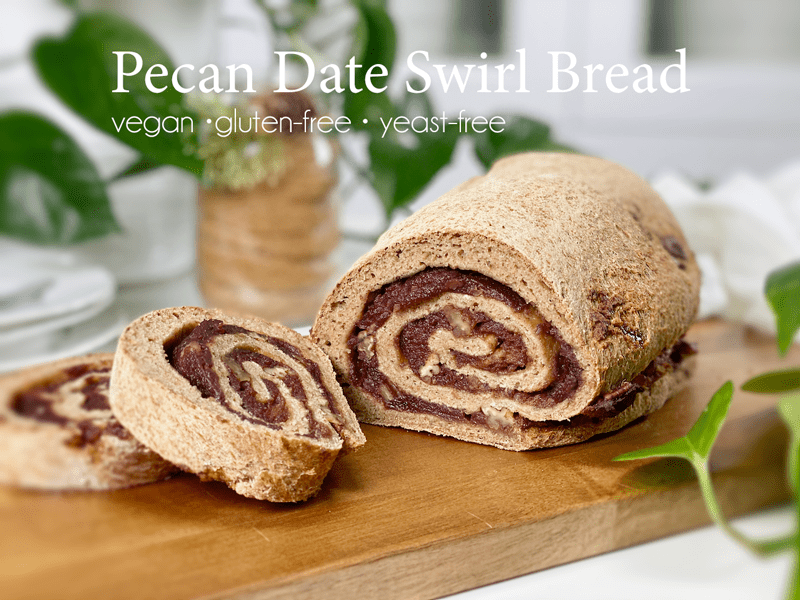
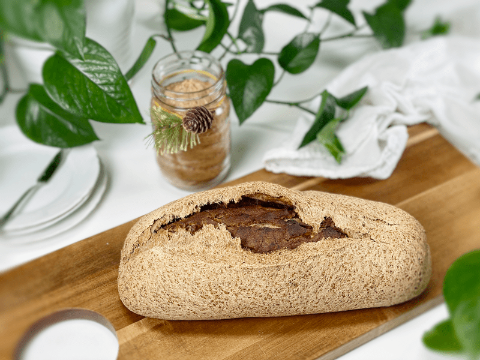
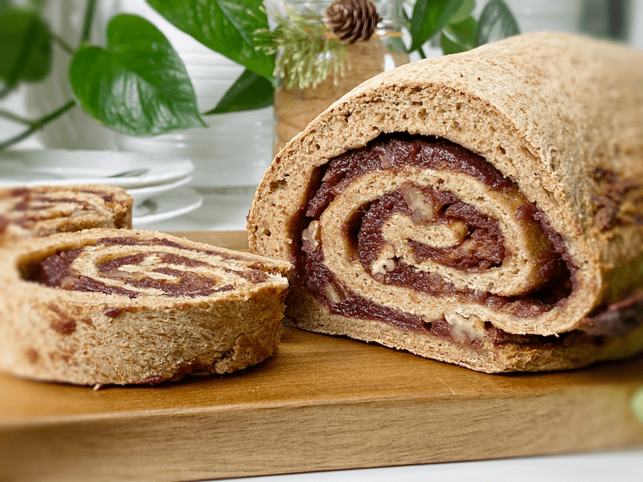

Pecan Date Swirl Bead | Baked | Gluten-Free | Vegan | Yeast-Free
To date, this is my favorite loaf of sweet bread that I have made. If you love dates, pecans, and bread — well, I have a strong feeling that you too will enjoy this bread. It is nutrient-dense and high in fiber, which will fill you up with just one slice. No need to worry about overindulging, because the nutrition that your body is craving will quickly be satisfied. Let me show you just how easy this bread is to make!

I designed this bread recipe with a specific friend in mind. It seems that most of us have food intolerances which cause us to stop enjoying certain foods, bread being a big one. I just couldn’t let her miss out, so I set to work to create a holiday bread for their whole family to enjoy (especially HER) on Christmas morning. Of course, I had to make two loaves at once so I could use one as a test run to make sure that it baked well and tasted delicious. With thumbs up on both accounts, I wrapped the other loaf and placed it in the gift basket. Let’s go over a few things I learned along the way.
Tips and Techniques
Date Paste
- You may already have some made up, but if you don’t, I will share a quick tip. Whenever I make date paste, I like to create extra to keep in the fridge or freezer (it doesn’t freeze solid). So when I made this recipe, I soaked one pound of Medjool dates in warm water.
- Once they were done soaking, I removed the dates to make the date paste, and I saved the soak water to use when creating a psyllium gel. This added a subtle sweetness to the bread dough. I provided a link on how to make date paste down below.
Bread Shape Outcome
- Every loaf of this bread seems to look different when I bake it. I will post a picture of two loaves I made at the same time. One split open on top, which was a delightful surprise. So, be ready for anything as you open the oven door to retrieve your bread.
- I have a sneaking suspicion that when I made the cut to score the top of the loaf, I went too deep, which is why it split open. So if you like that effect, keep that in mind.
Warming the Bread
- Unfortunately, this bread doesn’t toast well due to the thick date paste. It is best straight out of the oven, but it can be warmed by cutting slices and laying them on a cookie sheet. You can warm them in the oven or toaster oven (since they lie flat).

Ingredients Used
Rolled Oats (certified gluten-free)
- Oat flour is made by simply grinding rolled oats! The result is a superfine, fluffy, sweet flour that will make baked goods chewier and crumblier.
- If you have any type of intolerance to gluten, be sure that you seek out a brand that is certified gluten-free, which assures us that they haven’t been cross-contaminated with gluten-containing grains.
Hulled Buckwheat (whole kernels)
- For this recipe, I ground my own buckwheat flour. I personally think the flavor is superior to commercially ground buckwheat flour. It’s super easy and quick to do. I used my Vitamix blender for this 30-second task.
- You will find two types of buckwheat on the market: buckwheat with the hull still on is dark brown, while the hulled buckwheat groats (where the hull has been removed), is a grey-greenish color. I used hulled buckwheat for this recipe. The darker-colored buckwheat creates a darker and heavier flour. Curious about what brand I used? Click (here).

Sorghum Flour
- Ground from the kernel of the sorghum plant, this flour is a powerhouse of nutrition. It is a gluten-free ancient cereal grain. It has a smooth texture that makes it well suited for this bread.
- There are many health benefits to sorghum, but I lean toward it because it is rich in fiber, which benefits your digestive system and helps you feel fuller for longer.
- If you can’t find sorghum flour in your local grocery store, you can order it (here). If you don’t mind spending a few extra dollars, you can get sprouted flour (here).
Arrowroot Powder
- Commonly labeled as arrowroot powder, arrowroot flour, and arrowroot starch.
- This powder is made through the extraction of starch from the arrowroot plant, without the use of high heat or harsh chemicals.
- Adding arrowroot flour to your recipe helps to create a lighter and fluffier result, but it also works to bind all the ingredients together. Another reason I added it is because it creates a wonderful crust. You can find organic arrowroot powder (here).
Psyllium Husks
- There is NO replacement for psyllium in this recipe. I’m going to put my foot down and stand firm on this statement.
- I have provided 2 different measurements down below, depending on if you are going to use psyllium powder or the husks. I found that the husks provide a less dense texture, which is our preference.
- It works as a binder, along with giving the bread that bread-like, spongy texture that we crave.
Have a blessed and joyful day, amie sue
 Ingredients
Ingredients
Yields one loaf
Psyllium Gel
Bread Mix
- 1 cup (100 g) gluten-free, rolled oats, ground
- 3/4 cup (100 g) sorghum flour
- 1/2 cup (100 g) raw hulled buckwheat, ground
- 1/4 cup (40 g) arrowroot powder
- 1 tsp (4 g) baking powder
- 1/2 tsp (3 g) baking soda
- 1 tsp (6 g) sea salt
- 2 Tbsp (44 g) maple syrup
Swirl Ingredients
- 1 cup (280 g) date paste
- 1/2 cup (60g) whole pecans, chopped
Preparation
Psyllium Gel
- Quickly whisk the water and psyllium husk powder in a mixing bowl. It will instantly start to gel, which is to be expected. Set aside while you prepare the remaining ingredients, so it can thicken.
- Remember, if possible, use the soak water from the dates to make the gel.
- Preheat the oven to 350 degrees (F).
- Line a baking sheet with parchment paper, sprinkled with a little extra flour.
Bread Mix – Dry Ingredients
- In the mixing bowl that we are going to knead the bread in, whisk together the oat flour, sorghum flour, buckwheat flour, arrowroot, baking soda, baking powder, and salt.
- If you have a sifter, use that to thoroughly incorporate all the dry ingredients. Otherwise, use a whisk.
Mixing the Dough
- Add the psyllium gel and drizzle the maple syrup around the bowl.
- Using either a hand mixer or a free-standing mixer with dough attachments, knead for 5 minutes (set a timer on your phone) to ensure that it gets kneaded enough (don’t we all love feeling needed?).
- Start the mixer on low until the flour is folded in, then turn it up one speed. If you start off at too high a speed, the flour will jump out of the bowl.
- Place the dough on a piece of parchment paper and roll it out into a rectangle. Mine measured 15″ x 11″ x 1/4 ” thick.
- Spread a thick layer of date paste over the entire surface, followed by the chopped pecans.
- Starting from one end, roll the dough into a log. Pinch the side seam and ends closed.
- I like to dust the bread with extra flour before baking it, but that is totally optional.
- Score the top of the bread with the tip of a sharp knife, going no more than 1/4″-1/2″ deep. This creates that wonderful texture that you see in the photos.
- Bake on the center rack for 50-60 minutes.
- Take the loaf out of the oven and turn it upside down. Give the bottom of the loaf a firm thump! with your thumb, like striking a drum. The bread will sound hollow when it’s done.
- When it’s done baking, slide it onto a cooling rack and wait to cut when cool.
Storage
- Once the bread has thoroughly cooled, you can wrap it. It should last up to roughly 5 days.
- Brown paper bag: This will better protect your loaf and allow for good air circulation, meaning that your crust won’t get soft. Some people claim that a sliced loaf stored cut-side down in a paper bag will stay the freshest.
- Plastic bag: If you want to avoid staling at all costs, go with a plastic bag. Make sure to get as much air out of there as possible before sealing. Your crust will soften, but your bread won’t dry out or harden prematurely. Make up for unwanted softness with toasting.
- Tea towel: Wrap the bread in a tea towel, then place it in the bread box.
- Fridge: Whether you store it in the fridge is up to you. Many people feel that bread in the fridge turns stale quicker. If you’re not going to finish a loaf in the first few days after baking it, you might want to freeze it until you’re ready to eat it.
- Freezing: Rather than freezing the loaf as a whole, preslice it and place wax or parchment paper in between each slice before sliding it into a freezer-safe container. That way you can pull out 1,2, or as many slices as you want.
© AmieSue.com